기계정비산업기사 (2009-07-26 기출문제)
1과목: 공유압 및 자동화시스템
1. 공유압 기호 요소 중 대원(大圓)의 용도는?
- 제어 기기
- 특수한 형태의 롤러
- 에너지 변환기
- 체크 밸브의 기호 중 원의 표시
(정답률: 66%)

2. 다음 회로에서 단동 실린더의 후진속도를 증속시키기 위해 부분에 사용해야 할 요소는?
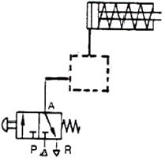
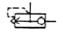
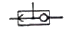
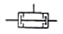
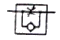
(정답률: 70%)
3. 공압장치에서 압축공기의 설명으로 옳은 것은?
- 압축공기는 온도가 상승해도 팽창하지 않는다.
- 에너지 손실이 적어서 가격이 저렴하다.
- 압축공기는 저장될 수 없다.
- 압축공기를 배출할 때 소음이 발생한다.
(정답률: 81%)
4. 밸브의 조작력이나 제어신호를 가하지 않은 상태를 어떤 상태라 하는가?
- 정상상태
- 복귀상태
- 조작상태
- 누름상태
(정답률: 86%)
5. 12kw 의 전동기로 구동되는 유압펌프가 토출압이 70kgf/cm2 , 토출량은 80ℓ/min, 회전수가 1200rpm 일 때 전효율은 몇 %인가?
- 59
- 68
- 76
- 87
(정답률: 50%)
6. 유압모터에서 가장 효율이 높으며, 고압에서도 사용할 수 있는 유압모터는?
- 피스톤 모터
- 기어 모터
- 기어 펌프
- 베인 모터
(정답률: 74%)
7. 공유압 회로 손실에 대한 설명으로 틀린 것은?
- 층류와 난류의 경계는 Re=13200 정도이다.
- 레이놀즈 수에 따라 층류와 난류로 구별된다.
- 손실 수두는 유체의 운동에너지에 비례한다.
- 손실 수두는 마찰계수와 직접적인 관계가 있다.
(정답률: 58%)
8. 공기압 조정 유닛에 대한 설명 중 틀린 것은?
- 윤활기에 공급되는 기름은 스핀들 오일이 적당하다.
- 에어 서비스 유닛 이라고도 한다.
- 공압필터→압력조절 밸브→윤활기 순서로 조립한다.
- 기구 세척 시 가정용 중성세제로 한다.
(정답률: 54%)
9. 감압밸브에 관한 설명으로 맞는 것은?
- 입구 압력을 일정하게 유지하는 밸브이다.
- 감압밸브는 방향밸브의 역할도 한다.
- 감압밸브는 정상상태 열림형이다.
- 감압밸브는 출구 측으로부터 입구 측으로 역류가 생길 때 역류작용을 하는 릴리프 밸브와 같은 작용을 한다.
(정답률: 41%)
10. 다음 설명에서 ( )에 알맞은 용어는?
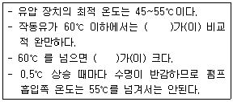
- 마찰계수
- 산화속도
- 동력
- 기계적 효율
(정답률: 66%)
11. 다음 중 온도 센서가 아닌 것은?
- 열전대(Thermocouple)
- 서미스터(Thermistor)
- 측온 저항체
- 홀 소자
(정답률: 81%)
12. 시간 종속 순차제어 시스템에 해당되는 것은?
- 프로그램 벨트
- 엘리베이터
- 카운터
- 플립플롭
(정답률: 47%)
13. 60Hz, 4극 유도 전동기의 회전자 속도가 1710rpm 일 때 슬립은 약 얼마인가?
- 5%
- 8%
- 10%
- 14%
(정답률: 53%)
14. 신호발생 요소의 신호 영역을 ON-OFF 표시 방식으로 표현하는 선도는 무엇인가?
- 변위 -단계선도
- 제어선도
- 논리도
- PFC
(정답률: 73%)
15. 자동화 시스템에서 핸들링 공정에 속하는 작업요소가 아닌 것은?
- 부품의 위치이동
- 가공 절삭
- 분리
- 클램핑
(정답률: 56%)
16. 4개의 입력요소 중 첫 번째와 두 번째 요소가 함께 작동되던지 세 번째 요소가 작동되지 않은 상태에서 네 번째요소가 작동되었을 때 출력이 존재하는 제어기의 구성을 논리적으로 표현한 것은?
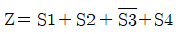
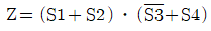
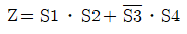
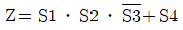
(정답률: 68%)
17. 직류 전동기가 회전 시 소음이 발생하는 원인이 아닌 것은?
- 축받이의 불량
- 정류자 면의 높이 불균일
- 전동기의 과부하
- 정류자 면의 거칠음
(정답률: 72%)
18. 제어 시스템에서 쓰이는 트랜지스터, 연산증폭기, 노트 앰프의 공동적인 역할로 옳은 것은?
- 신호저장
- 신호제한
- 신호 증폭
- 신호의 선형화
(정답률: 81%)
19. 짧은 실린더 본체로 긴 행정거리를 낼 수 있어 작은 공간에 실린더를 장착하여 긴 행정거리를 필요로 할 경우에는 좋으나 필요한 힘 이상의 큰 작격이 요구되는 것은?
- 케이블 실린더
- 양 로드 실린더
- 로드리스 실린더
- 텔레스코프 실린더
(정답률: 76%)
20. 설비의 평균 고장률을 나타내는 것은?
- MTTR
- MTBF
- 1/MTTR
- 1/MTBF
(정답률: 60%)
2과목: 설비진단관리 및 기계정비
21. 유체 윤활상태가 유지될 때 마찰에 가장 큰 영향을 주는 윤활유의 성질은?
- 비중
- 유동점
- 점도
- 인하점
(정답률: 81%)
22. 상비품 보전자재에 대한 발주 방식에 관한 설명으로 맞는 것은?
- 사용하면 사용한 만큼 즉시 보충하는 방식은 정량 발주방식이다.
- 발주시기는 일정하고 소비의 실적 및 예상 변화에 따라 발주수량을 바꾸는 방식은 사용고발주방식이다.
- 발주량을 항상 일정하게 하는 방식은 정기발주방식이다.
- 재고량이 항상 일정한 방식은 사용고발주방식이다.
(정답률: 52%)
23. 효율적인 설비보전 활동을 위하여 설비의 열화나 고장, 성능 및 강도 등을 정량적으로 관측하여 그 장래를 예측하는 것은?
- 신뢰성 기술
- 설비진단 기술
- 정량화 기술
- 트러블슈팅 기술
(정답률: 73%)
24. 그리스(grease)윤활이 유(oil)윤활에 비해 나쁜 점은?
- 냉각 작용
- 누설
- 급유 간격
- 먼지 침입
(정답률: 60%)
25. 다음 보전 조직은 무엇인가?
- 집중보전 조직
- 부분보전 조직
- 지역보전 조직
- 절충보전 조직
(정답률: 76%)
26. 시스템 구성요소와 설비 시스템을 서로 연결하여 놓은 것 중 잘못된 것은?
- 투입 - 원료
- 산출 - 제품
- 처리기구 - 설비
- 관리 - 제품 특성의 측정치
(정답률: 72%)
27. 정현파 신호에서 진동의 크기를 표현하는 방법으로 피크값의 2/π 배인 값은 무엇인가?
- 편진폭
- 양진폭
- 실효값
- 평균값
(정답률: 58%)
28. 설비의 열화 중 피로현상의 원인은?
- 사용에 의한 열화
- 자연적인 열화
- 재해에 의한 열화
- 비교적인 열화
(정답률: 82%)
29. 다음은 설비 내용 년수의 각 단위별로 감가되는 원가를 결정하는 기법이다.시간을 기준으로 하는 감가상각방법이 아닌 것은?
- 정액법
- 정률법
- 연수 합계법
- 생산량 비례법
(정답률: 54%)
30. 회전기계에서 발생하고 있는 진동을 측정할 때 변위,속도,가속도의 측정 변수 선정에 대한 설명 중 옳은 것은?
- 주파수가 높을수록 변위의 검출 강도가 높아진다.
- 주파수가 낮을수록 가속도의 검출 감도가 높아진다.
- 주파수가 낮을수록 속도의 검출 감도가 높아진다.
- 주파수가 높을수록 가속도의 검출 감도가 높아진다.
(정답률: 54%)
31. 설비 효율화를 저해하는 로스(loss)에 해당하지 않는 것은?
- 고장로스
- 작업준비ㆍ조정로스
- 속도로스
- 가동로스
(정답률: 65%)
32. 설비의 유효가동율을 나타낸 것은?
- 시간가동율×속도가동율
- 시간가동율/속도가동율
- 시간가동율-속도가동율
- 시간가동율+속도가동율
(정답률: 75%)
33. 기계설비의 진동을 측정할 때 진동센서의 부착위치가 올바른 것은?
- 베어링 하우징 부위
- 커플링의 연결 부위
- 플라이 휠(flywheel)의 외주 부위
- 맞물림 기어의 구동 부위
(정답률: 72%)
34. 설비보전의 관리기능에 속하는 것은?
- 보전표준 설정
- 예방 보전 검사
- 일상보전 및 점검
- 사후보전 및 개량보전
(정답률: 36%)
35. 고장예방 또는 조기처치를 위해서 실시되는 급유,청소,조정,부품교체에 해당하는 설비보전은?
- 일상보전
- 예방수리
- 사후수리
- 개량보전
(정답률: 65%)
36. 회전기계 정미진단 시 진동 방향 분석으로 잘못 짝지어진 것은?
- 언밸런스 -수평방향
- 풀림-수직방향
- 미스얼라인먼트 -축방향
- 캐비테이션 -회전방향
(정답률: 68%)
37. 진동방지의 일반적인 방법에 해당되지 않는 것은?
- 진동 차단기 사용
- 질량이 큰 경우 거더(girder)의 이용
- 2단계 차단기의 사용
- 가진기 사용
(정답률: 57%)
38. 팽창식 체임버의 소음 흡수 능력을 결정하는기본 요소는?
- 진동비
- 체적비
- 면적비
- 소음비
(정답률: 58%)
39. 제품별 배치(ProductLayout)의 장점으로 틀린 것은?
- 배치가 작업순서에 대응하므로 원활하고 논리적인 유선이 생긴다.
- 한 공정의 작업물이 직접 다음 공정으로 공급되므로 재공품이 적어진다.
- 단위당 총 생산시간이 짧다.
- 전문적인 감독이 가능하다.
(정답률: 58%)
40. 소음의 물리적인 성질에 대한 설명 중 올바른 것은?
- 음원에서 모든 방향으로 동일한 에너지를 방출할 때 발생하는 파는 정재파이다.
- 대기 온도차에 의한 음의 굴절은 온도가 높은 쪽으로 굴절한다.
- 음파가 한 매질에서 다른 매질로 통과할 때 구부러지는 현상을 음의 회절이라 한다.
- 서로 다른 파동 사이의 상호작용은 음의 간섭이다.
(정답률: 65%)
3과목: 공업계측 및 전기전자제어
41. 연산 증폭기의 특성 중 이상적인 연산증폭기의 특성이 아닌 것은?
- 입력 임피던스는 무한대이다.
- 출력 임피던스는 0이다.
- 전압 이득은 0이다.
- 동위상 신호 제거비는 무한대이다.
(정답률: 74%)
42. J-K플립플롭에서 J=1,K=1이면 동작 상태는?
- 변하지 않음
- set상태
- 반전
- reset상태
(정답률: 71%)
43. 교류 회로의 피상전력이 500[VA]유효전력이 300[W]일 때 역률은 얼마인가?
- 0.56
- 0.60
- 0.85
- 0.95
(정답률: 62%)
44. 다음 심벌 중 수동복귀 접점을 나타낸 것은?
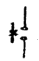
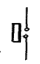
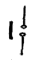
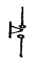
(정답률: 63%)
45. 측정량과 크기가 거의 같은 미리 알고 있는 양의 분동을 준비하여 분동과 측정량의 차이로부터 측정량을 구하는 방법은?
- 영위법
- 편위법
- 치환법
- 보상법
(정답률: 61%)
46. 대전체의 전하가 가지고 있는 전기량을 나타내는데 사용되는 단위는?
- 옴(Ω)
- 쿨롱(C)
- 볼트(V)
- 암페어(A)
(정답률: 69%)
47. 1차 지연요소의 스텝응답이 시정수 r를 경과 했을 때, 그 값의 최종 도달 갑에 대한 비율은 약 얼마인가?
- 50[%]
- 63[%]
- 90[%]
- 98[%]
(정답률: 60%)
48. 방사선식 액면계 중 방사선 빔(beam)의 차폐유무의 원리로 2위치 검출용도로 제작된 액면계는?
- 추종형
- 투과형
- 조사형
- 정점 감시형
(정답률: 55%)
49. 다음 논리식을 간단히 한 것은?
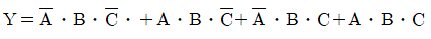
- A
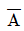
- B
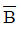
(정답률: 65%)
50. 다음 중 노이즈 대책에 대한 설명으로 알맞은 것은?(오류 신고가 접수된 문제입니다. 반드시 정답과 해설을 확인하시기 바랍니다.)
- 실드에 의한 방법은 자기유도를 제거할 수 있다.
- 관로를 사용하면 정전유도를 제거할 수 있다.
- 연선을 사용하면 자기유도를 제거할 수 있다.
- 필터를 사용하면 접지와 라인 사이에서 나타나는 일반모드 (commonmode)의 노이즈를 제거할 수 있다.
(정답률: 42%)
51. 셰이딩 코일형 전동기의 특성이 아닌 것은?
- 구조가 간단하다.
- 회전 방향을 바꿀 수 있다.
- 효율이 좋지 않다.
- 기동 토크가 매우 작다.
(정답률: 70%)
52. 제어 밸브는 다음 중 어디에 속하는가?
- 변환기
- 조절기
- 설정기
- 조작기
(정답률: 72%)
53. 비접촉 검출 스위치의 종류에 해당 되지 않는 것은?
- 광전 스위치
- 마이크로 스위치
- 초음파 스위치
- 근접 스위치
(정답률: 55%)
54. 다음 중 탄성 압력계에 속하지 않는 것은?
- 부자식 압력계
- 다이어프램식 압력계
- 벨로우즈식 압력계
- 브르동관식 압력계
(정답률: 51%)
55. 다음 중 기계식인 것은?
- 사이리스터
- 제너다이오드
- 트랜지스터
- 안내밸브
(정답률: 68%)
56. 다음 중 N형 반도체의 불순물에 해당되지 않는 것은?
- As
- P
- Sb
- In
(정답률: 54%)
57. 다음 중 전자계전기의 기능이라 볼 수 없는 것은?
- 증폭기능
- 전달기능
- 연산기능
- 충전기능
(정답률: 75%)
58. 다음 중 전자식 유량계용 변환기를 설명한 것으로 알맞은 것은?
- 유량변환의 1차 결과 출력은 직류 전압이다.
- 유체의 종류에 영향을 받지 않는다.
- 패러데이의 전자유도법칙을 응용한 것이다.
- 유량은 기전력에 반비례한다.
(정답률: 74%)
59. 그림의 회로에서 저항값은 각각 RF=75[kΩ],Rin=15[kΩ]이다. Vin에 -200[mV]의 입력을 가했을 때 Vout의 출력 전압은?
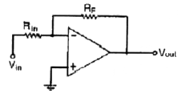
- +1[V]
- -1[V]
- +5[V]
- -5[V]
(정답률: 34%)
60. 다음 그림과 같은 R1=140[k], R2=10[kΩ]인 회로에 V=150[V]를 인가하면 R2양단에 걸리는 전압 V2는?
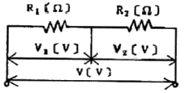
- 10V
- 20V
- 30V
- 40V
(정답률: 61%)
4과목: 기계정비 일반
61. 정비용 측정기구 중 베어링의 윤활상태를 측정하는 기구는?
- 베어링 체커
- 베어링 진동계
- 회전계
- 표면 온도계
(정답률: 77%)
62. 방청제의 종류 중 방청능력이 크고,두터운 피막을 형성하며,1종(NP-4),2종(NP-5),3종(NP-6)로 분류되는 것은?
- 바셀린 방청유
- 용제 희석형 방청유
- 윤활 방청유
- 지문 제거형 방청유
(정답률: 72%)
63. 기어의 백래시(backlash)를 주는 이유로 틀린 것은?
- 백래시를 가능한 크게 주어 소음 진동을 줄이기 위해서다.
- 치형 오차,피치 오차,편심 가공 오차 때문이다.
- 중 하중,고속회전으로 발열되어 팽창되기 때문이다.
- 윤활을 위한 잇면사이의 유막 두께를 유지하기 위해서다.
(정답률: 60%)
64. 유도전동기에서 회전수,극수 및 주파수의 관계식이 맞는 것은?(단, Ns:회전수, P:극수, F:주파수)
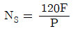
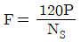
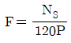
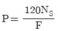
(정답률: 71%)
65. 두 축을 정확하게 결합시킬 수 있고 확실하게 동력을 전달시킬 수 있어 지름이 200mm이상인 축과 고속 정밀 회전축의 축이음에 많이 사용되는 것은?
- 올덤 커플링
- 플렉시블 커플링
- 고무 커플링
- 플랜지 커플링
(정답률: 51%)
66. 축이음의 종류에서 두 축의 관계 위치에 따라 종류를 연결한 것 중 관련이 없는 것은?
- 스틸 플렉시블 커플링 -경강선으로 된 그리드의 탄성을 이용한 것
- 올덤 커플링 축 이음 -2개의 축이 평행인 것
- 플랙시블 커플링 -2개의 축이 서로 교차되는 것
- 유니버설 조인트 이음 -2개의 축이 어느 각도를 가지고 교차되는 것
(정답률: 57%)
67. 펌프 운전 시 캐비데이션(cavitation)발생 없이 펌프가 안전하게 운전되고 있는가를 나타내는 척도로 사용되는 것은?
- 유효흡입수두
- 전양정
- 토출수두
- 실양정
(정답률: 65%)
68. 다음 마이크로미터에 나타난 측정값은?
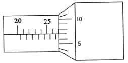
- 26.07mm
- 27.07mm
- 27.00mm
- 25.07mm
(정답률: 79%)
69. 펌프의 회전수를 변화시킬 때 양정은 어떻게 변하는가?
- 회전수에 비례한다.
- 회전수의 제곱에 비례한다.
- 회전수의 세제곱에 비례한다.
- 회전수의 네제곱에 비례한다.
(정답률: 72%)
70. 다음 중 기어 감속기의 분류에서 평행 축형 감속기에 속하지 않는 것은?
- 스트레이트 베벨기어
- 스퍼기어
- 헬리컬기어
- 더블 헬리컬 기어
(정답률: 70%)
71. 송풍기의 냉각방법에 의한 분류 중 틀린 것은?
- 공기 냉각형
- 재킷 냉각형
- 풍로식 흡입형
- 중간 냉각 다단형
(정답률: 64%)
72. 구름 베어링의 경우 간섭량이 적으면 원주방향으로 미끄럼이 생겨 발생하는 결함은?
- 크리프(Creep)
- 균열(Cracks)
- 플레이킹(Flaking)
- 뜯김(Scoring)
(정답률: 71%)
73. 축의 고장 중 설계 불량에 의한 고장원인이 아닌 것은?
- 재질 불량
- 치수 강도 부족
- 급유 불량
- 형상 구조 불량
(정답률: 62%)
74. V-벨트의 단면 형태 중 단면이 가장 작은 형은?
- M형
- A형
- E형
- B형
(정답률: 66%)
75. 원심식 압축기의 장점이 아닌 것은?
- 설치 면적이 비교적 적다.
- 기초가 견고하지 않아도 된다.
- 고압의 압축공기를 발생 시킬 수 있다.
- 압력 맥동이 없다.
(정답률: 59%)
76. 기어 펌프의 특징으로 맞는 것은?
- 효율이 낮다.
- 소음과 진동이 적다.
- 기름 속에 기포가 발생되지 않는다.
- 점성이 큰 액체에서는 회전수를 크게 해야 한다.
(정답률: 54%)
77. 다음 그림과 같이 볼트가 밑부분에 부러져 있을 경우 어떤 공구를 사용하여 빼낼 수 있는가?
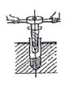
- 드릴
- 스크류 익스트랙터
- 스크류 바이스
- 탭
(정답률: 85%)
78. 다음 중 용적형 공기기계의 종류는?
- 터보 블로워
- 루츠 블로워
- 레이디얼 팬
- 프로펠러 팬
(정답률: 44%)
79. 밸브 취급방법으로 올바르지 않는 것은?
- 밸브를 열 때는 기기의 이상 유무를 확인하면서 천천히연다.
- 밸브를 전개할 때는 완전히 연후 1/2회전 역회전시켜둔다.
- 이종 금속으로 된 밸브는 열팽창에 주의하여 취급한다.
- 밸브를 열고 닫을 때는 누설을 방지하기 위해 빨리 조작한다.
(정답률: 77%)
80. 열 박음에서 끼워 맞춤 가열온도를 구하는 공식으로 맞는 것은? (단, T=가열온도,Δd:죔새(축지름 -구멍지름), α :열팽창 계수,D:구멍지름)
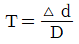
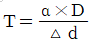
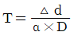
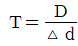
(정답률: 61%)